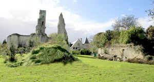
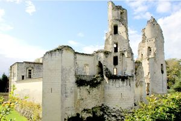
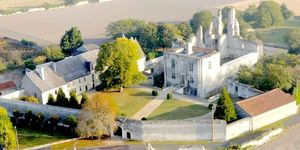
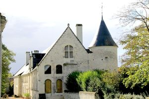
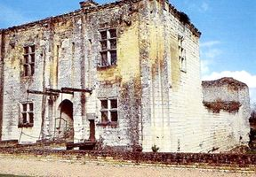
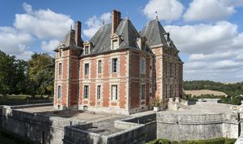
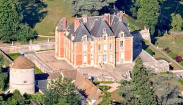

Recensement Jean-Claude Truffet
| Département | 86 — Vienne |
| Canton | Loudun |
| Commune | La Roche Rigault |
| Type d'édifice | Château |
| Période d'origine | XIV-XVII |







A deux kilomètres au nord -Est à Rossay le château de Bois Rogue CHAPELLE-BELLOUIN, a été complètement réaménagé lors de la première renaissance par Henri Bohier. Ce dernier était général des finances de François 1er, tout comme son frère, qui a bâti Chenonceau, c'est l'exemple unique d'un château-fort, complètement refait à neuf en introduisant l'architecture Renaissance dans notre pays. Devenu propriété royale, il a été offert par le roi François 1er à la famille de Sourdis qui est restée dans le premier cercle à la cour des Rois de France jusqu'au décès de Gabrielle d'Estrées, leur nièce et fille adoptive. Le comté de la Chapelle Bellouin a été racheté par le cardinal de Richelieu, lorsqu'il a dû élargir son domaine pour devenir duc et pair de France. Le 17 Messidor an XIII, il a été vendu par le duc de Richelieu ministre de Louis XVIII, plus cher que "l'immense et superbe château de Richelieu". BOIS ROGUE du XIVe siècle est situé dans un parc de cent hectares, le premier seigneur connu est Rogues de Coué. Cette famille conservera le domaine jusqu'au XVe siècle, puis il passera par mariage dans la famille des Sanglier. A la fin du XVIe siècle, Renée Sanglier, par son mariage avec Claude de Chatillon, fait passer la propriété dans la famille Chatillon. Au début du XVIIIe siècle, le château est acheté par la famille de Lignères.
CHAPELLE-BELLOUIN, du XIVe siècle, construit à côté d'une tour du XIIIe siècle dont la partie basse subsiste, et qui a été complètement réaménagé lors de la première renaissance par Henri Bohier. Le donjon, ou châtelet, qui date du milieu du XIIe siècle, fut une tour dobservation semblable à celles de Loudun ou Moncontour. Il a ensuite été rénové à la Renaissance. Le pont-levis, toujours fonctionnel, et les plafonds à caissons, sont témoins de cette transformation,' corps de logis, construit à la Renaissance, mesure plus de 50m de long. La moitié du bâtiment est occupé par une grande salle avec tribune : Nombreux sont ceux qui se demandent pourquoi le château porte ce nom. S'il y a bien une petite chapelle au sein du château, ce nom viendrait en fait, d'une chapelle plus grande qui eut été dans le village, à côté du château. BOIS-ROGUE, une chapelle isolée, une imposante fuie à demi éventrée et les frondaisons d'un vaste parc dénotent l'importance du domaine. Entre la ferme et une maison de maître du XIXe siècle, se trouve une élégante galerie seul vestige d'un ensemble disparu, à moins qu'il ne s'agisse d'un ambitieux projet avorté. La galerie se compose d'une suite régulière de neuf arcades en plein cintre ornées d'une agrafe à la clé et séparées par de fins pilastres ioniques. Les quatre croisées de l'étage aux allèges dessinées en table et aux meneaux cannelés, sont flanquées de pilastres corinthiens et interrompent la corniche.
Famille Henri Bohier. Famille Chatillon
"
Chapelle-Bellouin grav1 à 4 ;46° 57' 27" N, 0° 11' 11" Est . à Rossay le château de Bois Rogue grav 5-6-7